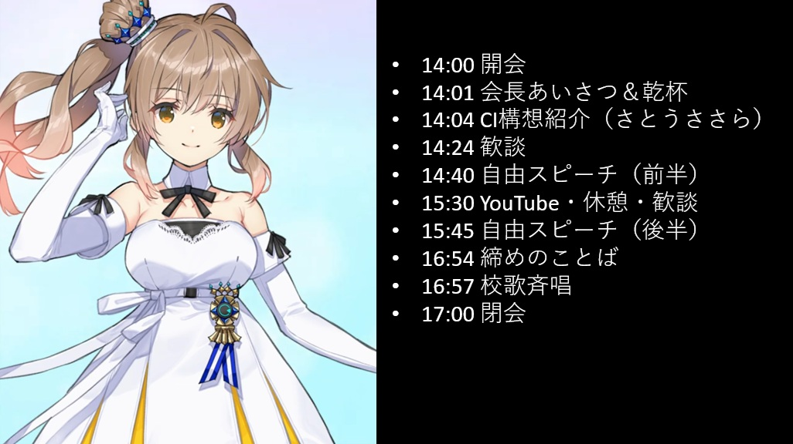

昨年の内容をもとにした仮の案内です。
日付・参加登録先、料理・会費の変更点は今年の情報に更新しています。ささらの画像、進行概要、基調コンセプト、BGMは昨年の内容を仮置きしています。今年の詳細が決まり次第、更新します。

2026年11月28日（土）14:00 ～ 17:00
PACE ITALIAN LOUNGE
〒106-0045 東京都港区麻布十番1-5-30 麻布十番スクエアビル 4F
麻布十番駅1番出口 徒歩5分
地図（Google Maps）
地図（要所の写真付き）
会場参考情報（昨年掲載のOZmallプラン）
今年の料理・会費の変更点
昨年と同じOZmallのプランをベースに、今年はメイン料理を「鶏もも肉グリル」から山形牛に変更しています。
これに伴い、会費は昨年の6,000円から6,500円に変更しています。
リンク先のプラン内容と、今年のメイン料理・会費は異なります。
昨年は、CI（Collective Intelligence / 集団知性）に注目しました。 これは、グループ全体の知恵や経験を活かし、個人のレベルを超えて、課題解決や価値創造を目指す取り組みです。 詳しくは、CI構想のページをご覧ください。
今年の冒頭セッションのテーマ・内容は検討中です。
昨年の進行をそのまま仮置きしています。項目・順序・時間配分、ささらの担当内容は今後調整します。